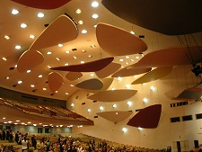
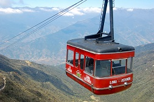
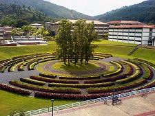
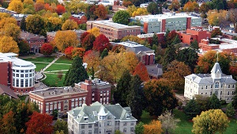
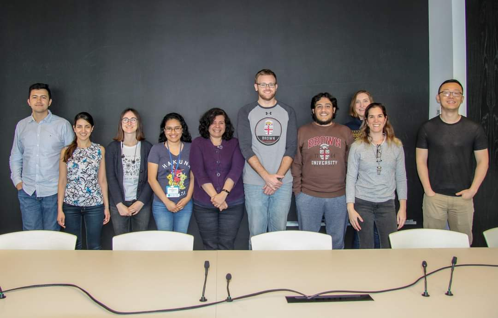
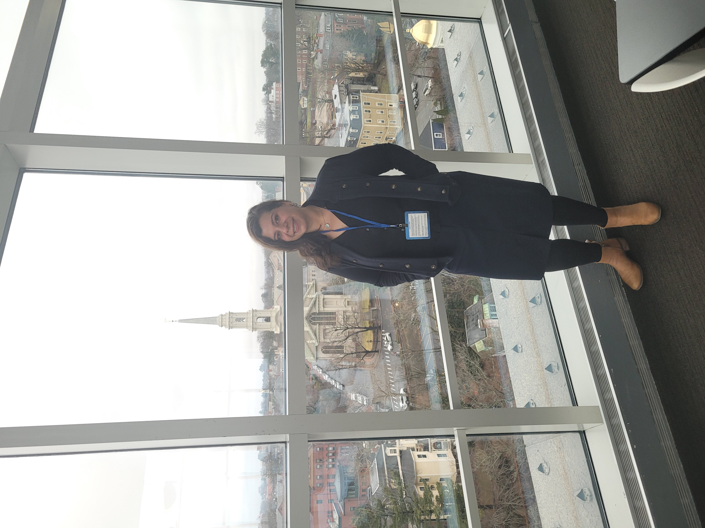
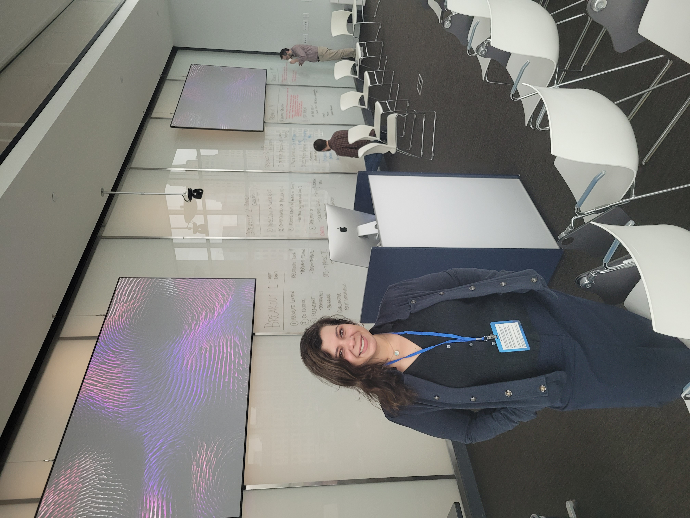

About
Education
| May 2014 | Ph.D. (Mathematics). Oregon State University. Dissertation: Mathematical Treatment and Simulation of Methane Hydrates and Adsorption Models. Advisor: Dr. Malgorzata Pesyznska. |
| June 2009 | M.A. (Mathematics) Bowling Green State University. Successful completion of written comprehensive examination based on Mathematical Analysis and Abstract Algebra. |
| June 2003 | M.S. (Mathematics) Universidad de los Andes. Thesis: Non-complementarity of Orlicz spaces in L1[0; 1] and C[0; 1]: Advisor: Dr. Diomedes Barcenas. |
| 2001 | B.Sc. (Mathematics) Universidad Central de Venezuela. Thesis: Regression Analysis using local polynomials (non-parametric statistics). Advisor: Dr. Ricardo Rios. |
I am originally from the city of Caracas, Venezuela, which is also home to where I did my undergraduate studies: the Universidad Central de Venezuela, "the house that overcomes the shadows" (It is interesting to note that UNESCO declared this university a world heritage site in 2000 due to its unique arquitectural style.) My first contact with research was with the area of probability and statistics, and my undergraduate thesis was on the topic of nonparametric statistics.
I did the first year of master's at the "Instituto Venezolano de Investigaciones Científicas", which is an isolated institution with an amazing library. The second year of master's, I attended "Universidad de los Andes", in Mérida, Venezuela, where I learned Banach space theory and was introduced to Orlicz spaces,which was the topic of my master's thesis.
After completing my master's, I returned home to Caracas where I lectured classes at two different institutions: Universidad Central de Venezuela and Universidad Simón Bolívar. After a few years, I was given the opportunity to further pursue my graduate studies at Bowling Green State University, where I earned my second master's and gained greater knowledge of Analysis, Complex Analysis, Topology, and basic Numerical Analysis.
 In 2009, I decided to start my PhD at Oregon State University in Corvallis, Oregon. I completed my PhD dissertation under the direction of Dr. Malgorzata Peszynska, who exposed me to many interesting topics in the area of applied mathematics (mathematical models for methane hydrates and adsoprtion on coal-beds).
While at WPI, I did research in machine learning with Dr. Randy Paffenroth. That experience combined with collaborations with members of the AWM WiSDM group brought more interesting projects and ideas that I am still reflecting and building on.
 I also was a posdoctoral visiting scholar at ICERM, Brown University during the Spring 2019 computer vision program. I interacted with many wonderful people from all around the world and had so many estimulating dicussions in research and other aspects of life and our professions.
 